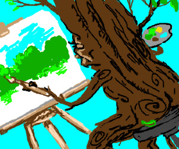

Of course he's a happy little bob ross, cause we don't have any other kind. Go out on a limb - that's where the Little Ross is. I will take some magic white, and a little bit of Vandyke brown and a little touch of yellow.
Now let's put some happy little bob ross in here. Let all these things just sort of happen. Just think about these things in your mind - then bring them into your world.
You can work and carry-on and put lots of little happy things in here. We don't have to be committed. We are just playing here. All kinds of happy little bob ross. This is your world. Bob Rosses cover up a multitude of sins.